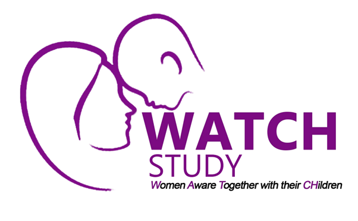
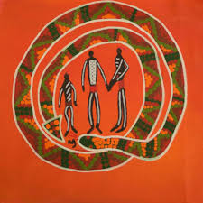

...
Mental health Research for Justice and Belonging.
Family, community and country
leads three large projects, including a cohort study with women and children
examining intimate partner violence, mental health, functioning and settlement (NHMRC funded), and
intervention with 5 remote First Nations communities focusing on male parenting and adolescent
mental health (MRFF funded) and a cohort study of women and children in Timor-Leste examining
trauma, cycles of violence and child development in a conflict-affected setting (NHMRC funded).,